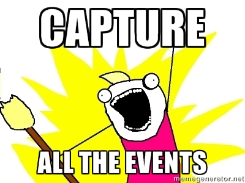
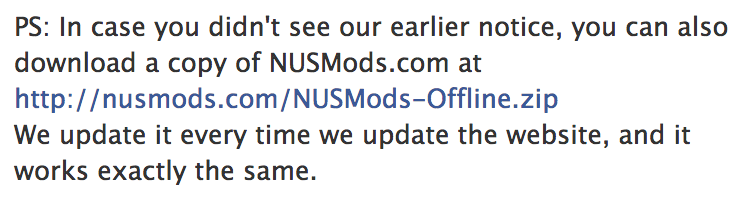
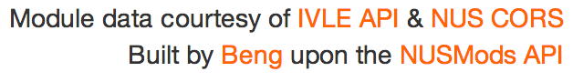
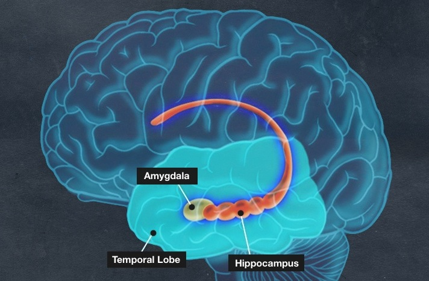
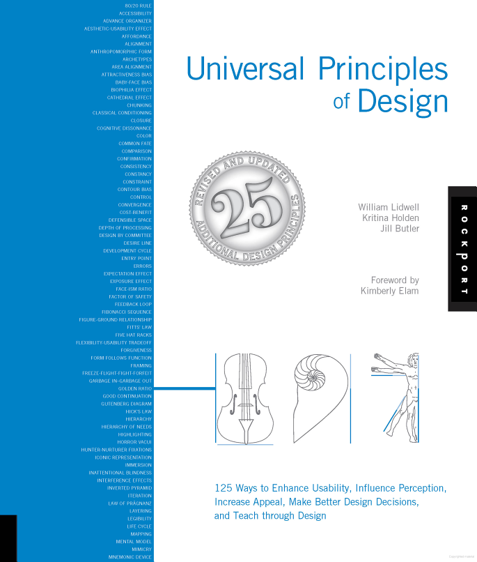
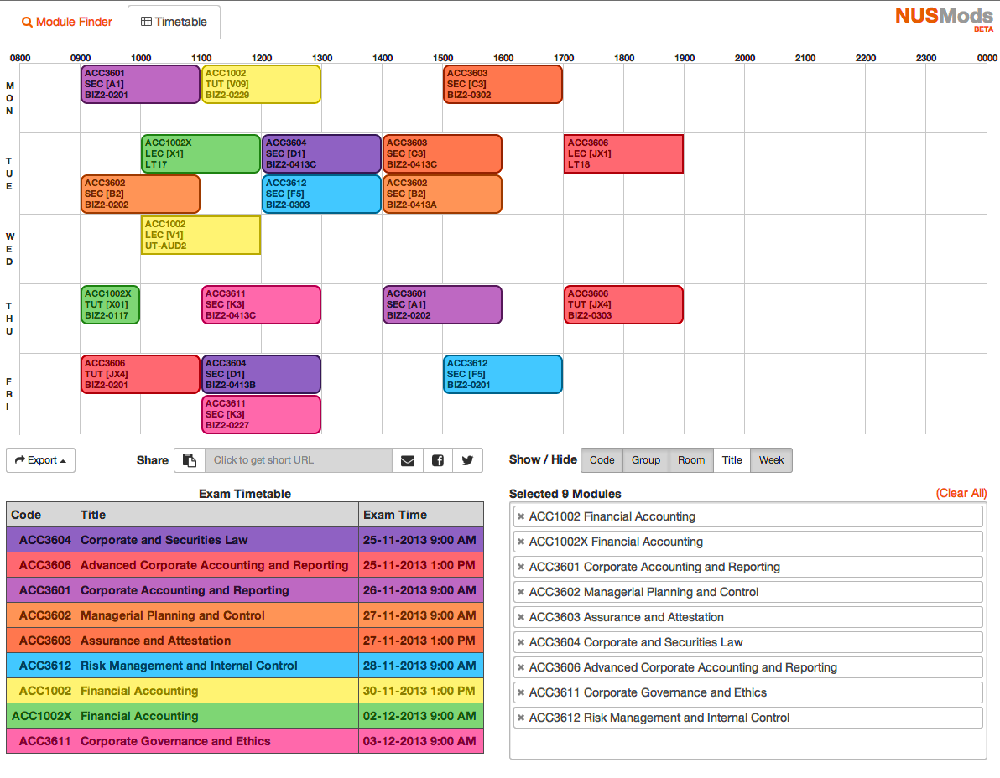
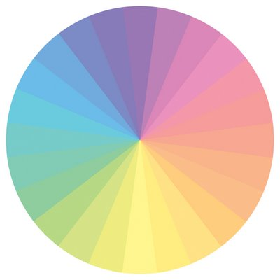
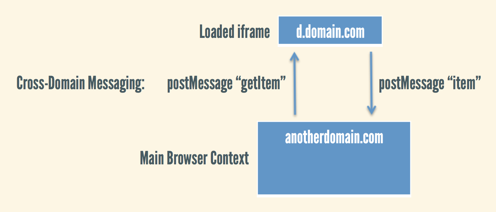
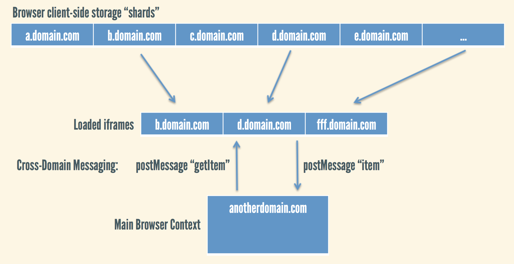

I built NUSMods
(And some other things...)
You only see the final product
Now let's take a look behind the scenes
Outline
- NUSMods: The Dirty History
- Design for Hackers
- Interesting Techniques
- Future Work
Scratch your own itch
- Solve your own problems
- Caring deeply gets others to care
- Better yet, scratch shared itches
Build something, anything
- Building stuff is the best way to learn
- Practice your craft
- NUSMods was originally built to learn JavaScript properly
Don't be afraid to show your work
- Connect with your community (NUS Hackers)
- Friday Hacks is a great place to start
- Everyone was a noob once
You'll never feel ready enough
(For your MVP)
- July 6, 2012: nusmods.com registered
- July 19, 2012: "Public" launch
MVPs are for testing assumptions
My assumption: NUSMod's Unique Selling Proposition was the Module Finder
Your users will surprise you
(i.e. I was dead wrong)
Listen to signs you need to pivot
- Data doesn't lie
- 80% of users use 20% of features
- You need metrics
How do you know what events to capture upfront?
You don't. Try Heap Analytics

Fake it 'til you make it
- Do things manually
- Until you can't
- You probably don't need a neural network
Don't be afraid to promote yourself
Using "we" instead of "I":

Only added credits a few weeks later:

Technology stack
- Initial frontend: Coffeescript, LESS, Jade
- Current frontend: Backbone.Marionette, JavaScript, RequireJS, SASS
- Build process: CodeKit, now Grunt
- Crawling and processing module data: Node.js
- Minor backend bits: PHP
Overarching principles
- Static site (Fast, optimized for CDN, far-future expires headers, cache busting)
- Touch-friendly
- Most features usable offline
Contour Bias
“A tendency to favor objects with contours over objects with sharp angles or points.”
Amygdala: fear subprocessor

- Sharp Corners = Touch-Me-Not
- Round Corners = Touch Me
Universal Principles of Design

NUSMods from an alternate universe

Color Psychology
Pastels = calming, soothing

Design is a set of decisions about a product
(As defined at Quora)
Interesting techniques
(I hope!)
Client-side export
- Excel, HTML and iCalendar files generated directly in-browser
- Eliminates server round trip and can be downloaded even while offline
- For JPG / PDF, exported HTML is rendered by server in a headless WebKit instance
Data URIs
<a href="data:application/vnd.ms-excel,%3C%3Fxml%20version%3D%221.0%22%3F
%3E%3CWorkbook%20xmlns%3D%22urn%3Aschemas-microsoft-com%3Aoffice%3A
spreadsheet%22%20xmlns%3Ass%3D%22urn%3Aschemas-microsoft-com%3Aoffice%3A
spreadsheet%22%3E…”>Excel File</a>
HTML5 Download Attribute
<a download="My NUSMods.com Timetable.xls" href="#">Excel File</a>
- Only supported by Chrome in past 2 years, Firefox in past year
- Downloadify library instead for other browsers (requires Flash)
SpreadsheetML
Supported since Office 2003
<?xml version="1.0"?>
<Workbook xmlns="urn:schemas-microsoft-com:office:spreadsheet"
xmlns:ss="urn:schemas-microsoft-com:office:spreadsheet">
<Styles>
<Style ss:ID="Default">
<Alignment ss:Horizontal="Center" ss:Vertical="Center" ss:WrapText="1"/>
</Style>
<Style ss:ID="b">
<Font ss:FontName="Calibri" ss:Size="12" ss:Bold="1"/>
<NumberFormat ss:Format="0000”/>
</Style>
</Styles>
<Worksheet ss:Name="My NUSMods.com Timetable">
<Table ss:DefaultColumnWidth="35">
<Column ss:Width="65"/>
<Row>
<Cell ss:Index="2" ss:MergeAcross="1" ss:StyleID="b">
<Data ss:Type="Number">800</Data>
</Cell>
Never rewrite your software
- 1st rewrite commit ~1 year and 170 commits ago
- Have to deliver all old features before shiny new features
- It always takes longer than you think
- Things keep changing
- Do iterative refactoring instead
Consolidates and normalizes NUS module information from:
- CORS historical bidding statistics
- CORS module information listings
- IVLE API
- NUS Bulletin
- NUS Examination Time-Table
One step further: NUSMods.js Library
Delta updates
- Module data is updated at most a few times daily
- Solution: statically generated JSON
- Since-[last-updated-timestamp].json
- Maybe with weekly / monthly rollups
- Taking static philosophy too far?
Cross-domain messaging to share client-side storage

LSD.js: Local Storage, Distributed

Shared, unlimited client-side storage
- Any site using library will keep data updated in background
- Any new site using library will appear to load data instantly
NUSMods: NUS Modifications
- Host / promote others' mods
- Per-module pages, where mods (e.g. Corspedia) can be embedded or linked to
- GitHub organization?